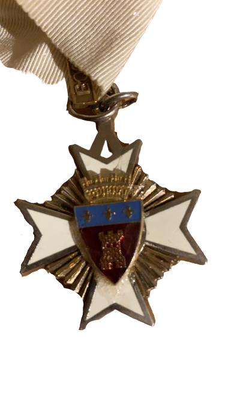
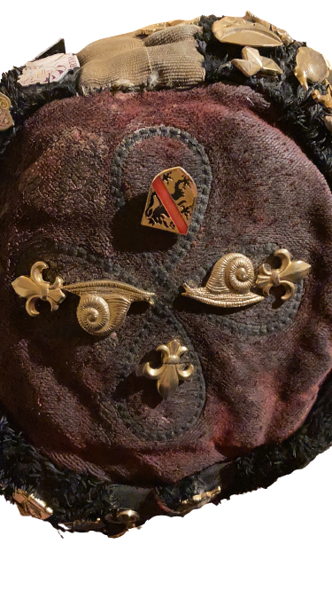
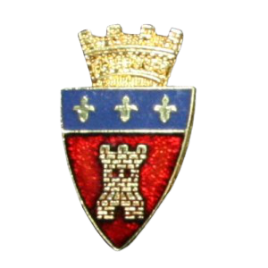
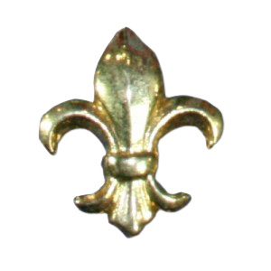
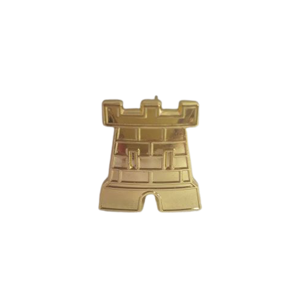
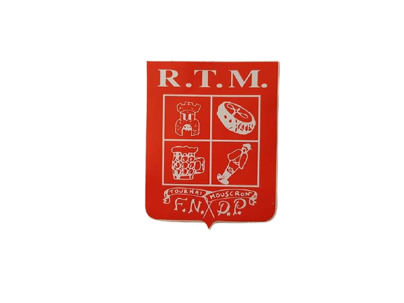
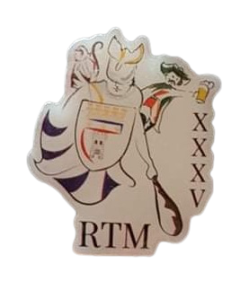
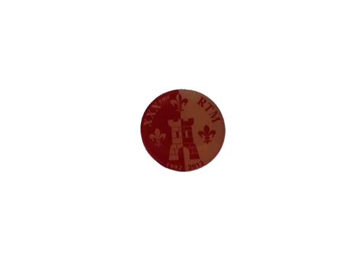
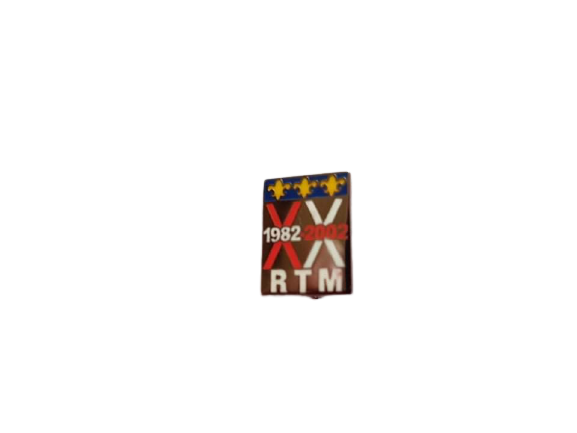

La Destuna
Témoignage de Jean-Philippe Rivière
Repris du livre “Naissance d’un folklore" écrit par Jean-Philippe Rivière, 2014, premier calotté Namurois.
Namur, Facultés Notre-Dame de la Paix, 2ème semestre de l’année académique 1981-82. Quelques étudiants, pour la plupart en première candidature et issus du Collège Notre-Dame de Tournai, s’ennuient…
Il est vrai que la vie estudiantine namuroise est un peu morne à l’époque (...) Et si, nous, Tournaisiens (et un Mouscronnois (…)), nous accueillons plus particulièrement les gens de chez nous ??? Après tout, à Louvain ça existe… . une Régionale !
Nous sommes en avril 1982 : la Régionale Tournai-Mouscron est née ! (...) Le comité se scinde en deux divisions : la première doit se charger des activités “culturelles et sportives’, la seconde des activités “récréatives” (la guindaille quoi). (…)
Que les choses soient bien claires : les premières bleusailles n’eurent rien à voir avec l’organisation rodée et codifiée que nous connaissons aujourd’hui. Pas question de cortège de bleus dans la rue et, encore moins, d’épreuves paramilitaires type escalade de la Citadelle. Tous auraient à coup sûr, été embarqués de suite par la Police et , ensuite, virés des Facultés sans autre forme de procès. Tout s’est fait en très petit comité et, disons-le, dans la clandestinité. (...)
La bleusaille se résumait à une alternance d’à-fonds (...) et de gueule-en-terre avec un apprentissage très sommaire de certains chants (...). Pas très original, pas très varié, mais très intense… tous les jours, tous les soirs, toutes les nuits pendant trois semaines. (...)
Ce qu’il faut surtout retenir, c’est qu’en début d’automne ‘82, les “Poils” et les bleus ensemble ça faisait vingt personnes noyées dans 4500 étudiants. Tous, donc se connaissaient ou ont vite appris à se connaître et il en est naturellement resté entre eux de solides amitiés dont certaines perdurent encore 30 ans plus tard.
Cette indéfectible solidarité entre les “pionniers” sera d’une importance fondamentale dans le développement ultérieur du folklore (...). Enfin ce nombre restreint de participants au tout début explique que ce sont souvent les mêmes noms que l’on retrouvera à l’origine des initiatives qui seront prises dans les deux années qui suivirent.
L’Ordre des Trois Lys
Le premier des vlecks du site namurois fut créé en 1987 dans le but de récompenser un camarade de la RTM s’étant fait remarquer en rendant de précieux services à notre régionale.
L’Ordre est gardé par un dignitaire de la RTM qui porte le titre de Grand-maître de l’Ordre des Trois Lys, nommé pour une durée indéterminée et chargé de proposer aux autres membres de l’Ordre de nouveaux chevaliers ainsi que de veiller au respect du folklore au sein de la régionale.
Les anciens Grand-maîtres se distingue du Grand-maître actuel par leur collier : rouge pour les anciens et blanc pour l’actuel (...). Ce vleck est représenté par trois lys sur le calot. (Syllabus de Calotte RTM XXXVIIème)
 
L’Ordre du 10ème
Vlek attribué à dix calottés RTM lors du dixième anniversaire de la régionale en 1992. Il est représenté par un 10 sur le calot.
(Syllabus de Calotte RTM XXXVIIème, 2017)
Amis du Lys
Vlek décerné à un calotté extérieur à la RTM, ayant pris part activement aux activités et respectueux du folklore. L’Ami du Lys se voit ainsi décerner le privilège de lancer le chant des Tournaisiens en corona – si aucun autre calotté RTM n’est présent – et reçoit un droit de suffrage lors de tout vote interne à la RTM (élection de président, calotte, …)
(Syllabus de Calotte RTM XXXVIIème, 2017)
Le gardien de la tour
Vlek décerné à une seule personne (Adrien Mogenet) pour l’instant pour ses guindailles.
(Syllabus de Calotte RTM XXXVIIème, 2017)
Le Petit Bitu
Ce sont les régionales RTM et Carolo qui ouvrirent en 1984 le bar “Le Petit Bitu”, situé rue Lelièvre. En 1993, François Bersez dit Lapin, président RTM 88-89 ouvrit un nouveau bar suite à la fermeture du précédent, “Le Petit Bitu II”, aujourd’hui repris par deux anciens de la RTM, dont un, ancien président, Mathieu Van Bel.
|  |  |  |  |
|  |  |  |